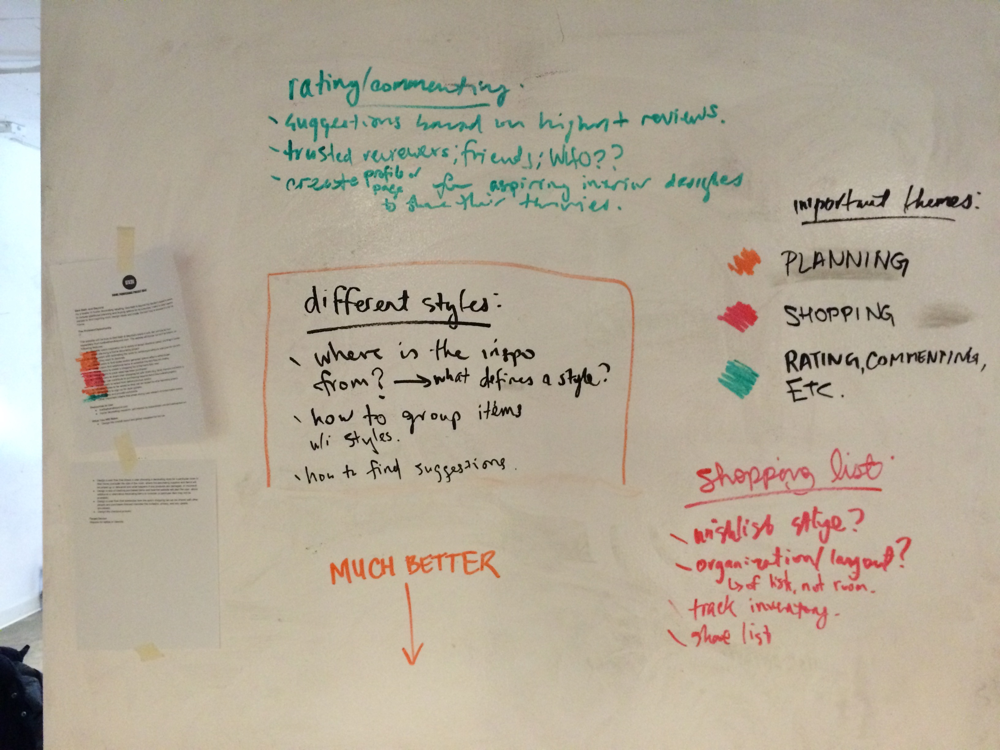
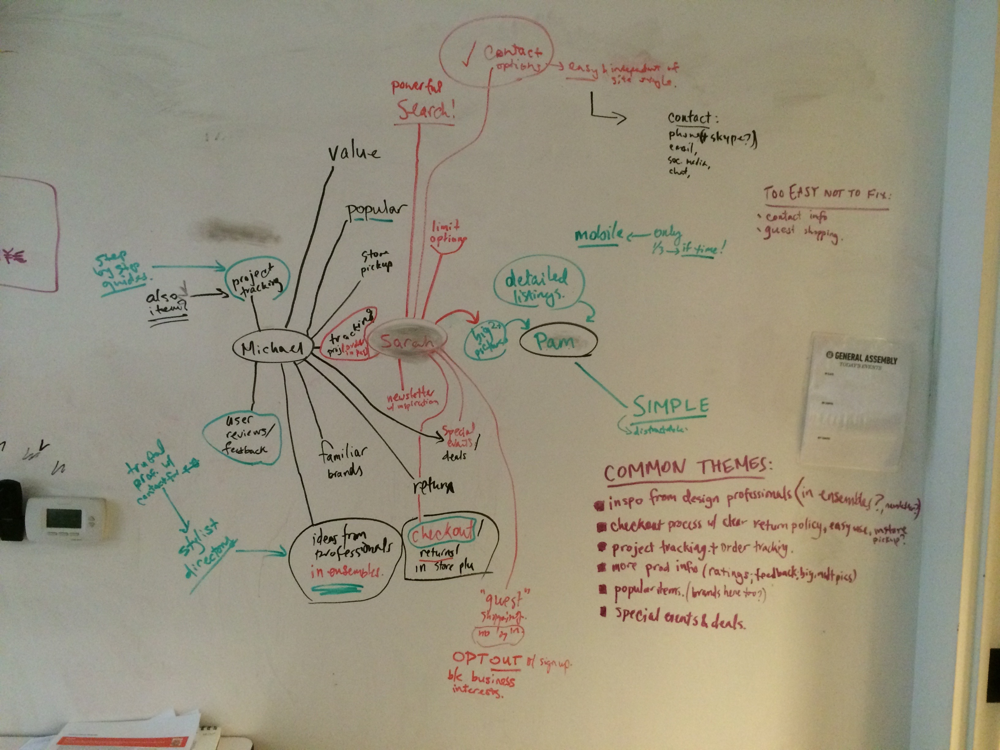
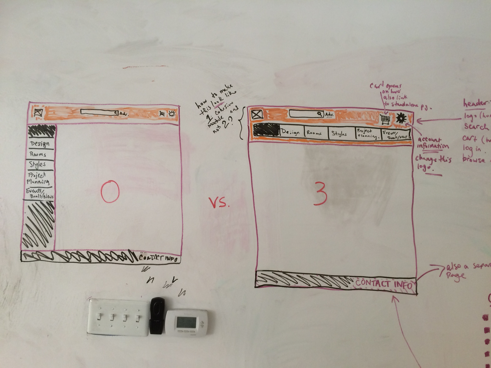

Beyond the Aisle
A Bed, Bath, and Beyond product designed to inspire and be inspired.
this is where the brief rundown of the stuff (skills, technologies, etc.) happens. if employer doesn't expect to be hiring me for this, they might not want to look at the rest of it.
Axure, Competitive Analysis, Card Sorting, Concept Mapping, A/B Testing, Userflows, Wireframing, Sketching, Usability Testing
1. Discovery and Research:
Deconstructed project brief, and grouped requirements into three categories.
Next, we deconstructed the user personas to best determine what the users wanted. Each persona was constructed into its main points separately, and then a concept map was created, with each persona as a different color to best visualize the overlap. With the user needs outlined, we could look into the competitors' products to determine what was most needed.
Competitive Analysis: Next, we completed a competitive analysis, ensuring to represent a diverse set of products, such as design inspiration sites, home decoration sites, and other related sites (such as Pinterest). Using this, we found that competing products either provided inspiration without opportunity to buy, or opportunity to buy without completed collections to inspire home design.
Design Inspiration Analysis: Through the concept map of the persona analysis, we were able to determine which ideas were the most common, to focus on those first. Next, we focused on user needs that were easy to fix, even if they were not ubiquitous through the personas.
User Research: Through user research, we determined that users wanted a product that was uncluttered, and allowed for quick finding of information. One user noted their desire to not have to do as much reading to learn about the product, so we were determined to show as much information as clearly as possible using visuals. We also tested whether users wanted to see a left side navigation panel or an upper, tab-style, navigation panel using A/B testing, and the result was unanimous. Users wanted the tabs at the top to allow for easier scanning.
2. Sketching and Ideation
User stories and journeys: Each persona was deconstructed into it's major components, and eventually we were able to determine the root cause for each of these components, so that each user was summarized in a few words: Summarize persona using 1 word, 5 words, 50 words. Rough sketches: The three major pages of the product were sketched out (global navigation, collection page—this is like a product page composed of a collection of products, and individual product page).
3. Narrowing Scope and Structure
User flows: A user flow was created for each persona. For one persona, the users were both partners in a relationship, and so their user flows were shown together, but using different colors.
Wireframes and Sketches: In wireframing, we created a Sitemaps and Diagrams: These different user flows were compiled into a sitemap that included all information for each.
4. Prototyping and Testing
Prototype: We created a prototype in Axure that showed the process of finding an inspiring collection of products.
Usability testing and results: The user personas included a desire to see a more detailed product page. In order to allow for users to find the additional information that was specifically relevant to their needs, we created a product page, with sections (product info, specifications, and reviews) outlined serially, each with an expand button to provide more information. Through usability testing, we determined that users felt different information was most important to them, and each wanted to see how to find their desired information without having to scroll. In order to allow for that, we created a second iteration of the product page, with tabs for the above sections of additional information. Through A/B testing, we determined that this second product page was better received, so it was used in the final product.
Want: more detailed product page but without clutter.
Idea: product page, with sections (product info, specifications, and reviews) outlined serially, each with an expand button to provide more information. Through usability testing, we determined that users felt different information was most important to them, and each wanted to see how to find their desired information without having to scroll. In order to allow for that, we created a second iteration of the product page, with tabs for the above sections of additional information. Through A/B testing, we determined that this second product page was better received, so it was used in the final product.